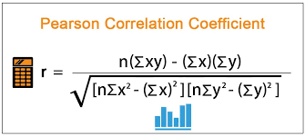

추천 시스템에 대한 기초 내용에 대해 공부해 보자.
추천 시스템의 종류
추천 시스템은 크게, Content based method, Colaborative filtering method, hybrid method로 나뉜다.

Content based 방법은 서로 비슷한 아이템들을 사용자에게 추천하는 방식을 말한다. 예를 들어 헐크라는 영화와, 어벤져스 영화는 서로 히어로 영화이고, 등장인물이 비슷하기 때문에, 비슷한 영화라고 볼 수 있다. 따라서 헐크 영화를 좋아하는 사용자가 있다면, 어벤져스 영화도 좋아할 것이라고 생각하고 추천하는 방식이다.
Colaborative filtering 방법은 서로 취향이 비슷한 사용자에게 다른 사용자가 선택했던 아이템을 추천 하는 방식이다. 만약 A라는 사용자와, B라는 사용자가 좋아한 영화목록이 비슷하다면, A 사용자가 높은 평점을 준 영화를 B 사용자가 아직 보지 않았다면, B라는 사용자에게 그 영화를 추천해 주는 방식이다.
Hybrid method는 Content based method, Colaborative filtering 방법 둘다 섞어서 적용한 추천 방식이다.
1. 협업 필터링 (Collaborative filtering) 방식
협업 필터링 방식에서는 사용자별 아이템 선호도를 나타내는 2차원의 행렬을 데이터로써 사용한다.
2차원 행렬의 row는 사용자, col은 아이템으로 나타낸다. (혹은 그 반대로)
예를 들어 2차원 행렬의 a 번째 row의 b번째 col에 있는 element값은 a 사용자가 b 아이템에 대한 선호도를 나타낸다.
모든 사용자가, 모든 아이템에 대한 선호도를 표기할 수는 없기 때문에 (사용자가 존재하는 모든 아이템을 사보고 리뷰할 수는 없기 때문에) 2차원 행렬은 아래 그림과 같이 대부분의 element가 비어있는 sparse matrix로 표현된다.
이 sparse matrix에서 각각의 사용자, 혹은 아이템들의 유사도를 측정하고, 그 유사도를 기반으로 추천을 하게 된다.
협업 필터링 방식은 다른 방식과 다르게, 아이템과, 유저에 대한 정보가 필요가 없으며 오직 아이템과 사용자간의 상호 작용 데이터만 필요하다.
1-1 유사도 측정 기준
협업 필터링에서는 아이템들간의 유사도를 측정하는 item-to-item 방식, 유저들간의 유사도를 측정하는 user-to-user 방식이 있다.
1-1-1 Item to item
Item-to-item 방식에서는 유저와 아이템간의 선호도를 나타내는 행렬에서 여러 유저들의 선호도를 기반으로 어떠한 아이템들이 서로 유사한지 계산한다. 이 방식과 content based method가 다른 점은, content based method는 아이템의 내용을 기반으로 유사도를 측정하는 반면, item-to-item colaborative filtering은 사용자들의 선호도 데이터만 이용하여, 아이템 간의 유사도를 측정한다. (만약 두가지 방법 모두 사용하여 유사도를 측정한다면, hybrid method가 된다.) 사용자가 A라는 아이템을 좋아한다고 판단이 되면, 유사도 측정을 통해 아이템 A와 가장 비슷한 아이템을 고르고 사용자에게 추천하게 된다.
1-1-2 User to user
User-to-user 방식에서는 유저와 아이템간의 선호도를 나타내는 행렬에서 여러 유저들의 선호도를 기반으로 어떠한 유저들이 서로 유사한지 계산한다. A라는 사용자와, B라는 사용자가 서로 좋아하는 영화 목록이 비슷하다면, A 사용자가 본 영화들을 B 사용자에게 추천하는 방식이다.
1-2 유사도를 구하는 방식
협업 필터링 방식에서 유사도를 구하는 방식은 크게 2가지로 나뉜다.
1-2-1 Model 방식
Model 방식은 주어진 데이터셋을 기반으로 학습한 모델을 사용하여(parameter를 학습하여) 추천을 하는 방식이다. Model 방식은 아이템과, 사용자간의 상호작용을 나타내는 2차원의 행렬에서 비어있는 element들을 학습된 모델을 통해 채워넣는 방식으로 추천하는 방식을 사용한다.
1-2-2 Memory based 방식
memory based 방식은 주어진 데이터에 바로 계산되어 나온 결과를 기반으로 추천을 하는 방식이다.
memory based 방식은 수식을 통해 예측값을 구하게 된다. memory based 방식에서 대표적으로 사용되는 방식은 cosine 유사도나, pearson 상관관계도이다. 이러한 수식으로 유사한 사용자들을 찾아내고, 유사한 사용자가 선택한 아이템을 추천하는 방식을 사용한다.* cosine 유사도란
cosine 유사도를 구하는 수식
각각 비교할 데이터를 벡터로 표현하고, 내적값을 이용하여 두개의 벡터 사이의 각도가 작으면 작을 수록 벡터의 방향이 비슷하다는 점을 활용하여, 유사도를 구하는 방식이다.* pearson 유사도란

두 변수의 상관관계를 구하는 pearson correlation 공식이다.

2. Content based methods
Content based method는 추천하고자 하는 아이템들의 특징을 분석하여, 아이템간 유사도를 계산하여 사용자에게 추천하는 방식이다.
사용자가 이전에 좋아한 아이템과 최대한 비슷한 아이템을 찾아서 추천하며, 아이템의 특징을 뽑아내기 위해, Doc2vec기법을 사용하여 텍스트 데이터 feature vector를 뽑아내거나, 이미지 기반의 데이터를 feature vector로 뽑아내어, vector간의 유사도를 측정하여 아이템 유사도를 계산한다.
Content based method는 협업 필터링 기법과 다르게 Cold starting 문제에 대해 비교적 자유롭다.
새로운 아이템에 대하여 feature vector를 뽑아내는 방식은 기존 데이터셋과 관련이 없기 때문이다. 하지만 한번 사용자가 특정 아이템에 대한 추천을 받게 되면, 그 뒤로 계속 비슷한 아이템만 추천 받게 된다는 문제점이 있다.
다음 포스팅에서는 어떻게 머신러닝 기법을 Collaborative filtering에 적용하는 지 알아보도록 하자.
References
Various Implementations of Collaborative Filtering
Introduction to recommender systems